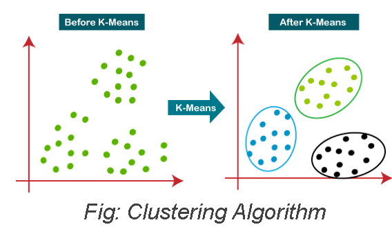
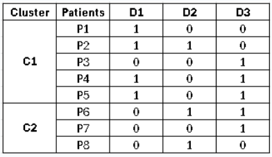
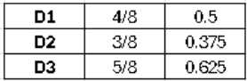
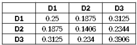
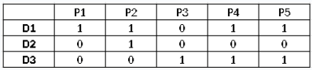
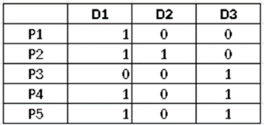
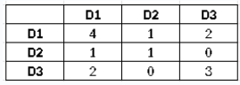
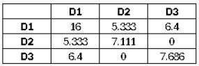
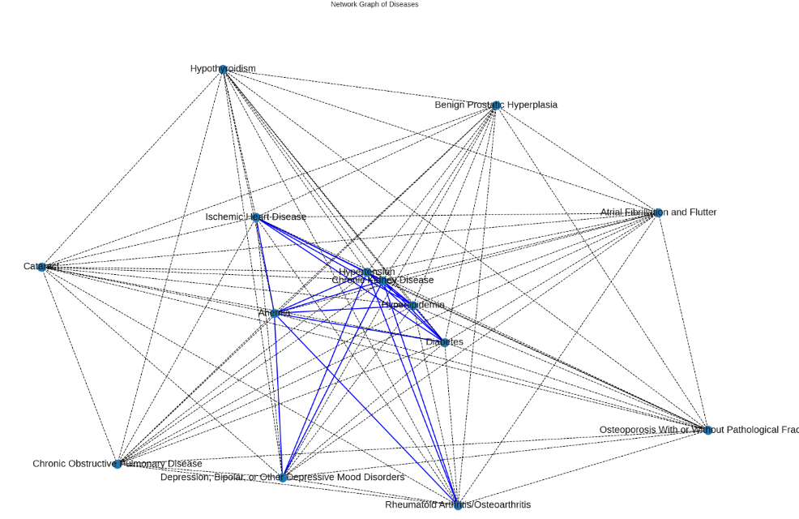

Methodology: Clustering Techniques and Network Analysis
In this study, we employ a multifaceted methodology to explore the intricate relationships between various health conditions using advanced analytical techniques. Our primary focus is on utilizing machine learning techniques to identify patterns and interactions among multiple health conditions.
I. Machine Learning Goal: Clustering Techniques
The goal of our machine learning approach is to implement clustering techniques that reveal underlying patterns and associations among diverse disease states. By analyzing the dataset, we expect to identify distinct clusters that represent groupings of patients based on their similarities concerning diseases and socio-economic factors. These clusters will provide valuable insights into the co-occurrence of conditions, potentially highlighting critical disease syndemics that warrant further investigation.
II. Observed-to-Expected Ratio (OER)
An integral aspect of our analysis includes the calculation of the Observed-to-Expected Ratio (OER). This metric will allow us to assess the extent to which observed disease interactions deviate from what would be expected if the diseases occurred independently. By comparing the actual prevalence of disease clusters to the expected prevalence, we can identify significant syndemic relationships and discern how socio-environmental factors contribute to these interactions.
OER Calculation steps(taken):
- Calculate Expected Coexistence : b x c
- Calculate the disease prevalence in the entire population (disease_prevalence).
- Calculate the expected coexistence of disease pairs in the entire population.
- Outer product of disease_prevalence with itself
- Entry at position (i, j) is expected coexistence of diseases i and j under assumption of independence
- Calculate Observed coexistence per cluster : a
- Multiplying the transposed DataFrame (cluster_df.T) with the original DataFrame (cluster_df), where cluster_df = cluster dataset.
- OER per Cluster = a / (b x c)
Comorbidity Strength formula:
- Observed to Expected Ratio (OER) = Observed co-existence of disease pair / Expected co-existence of a disease pair under the assumption of independence
-
OER(Di,Dj) = a / ( b * c )
- a = proportion of coexistence of diseases i and j
- b = prevalence of disease i
- c = prevalence of disease j
Interpreting OER:
- OER > 1 : diseases co-occur more frequently than expected
- OER = 1 : diseases co-occur as expected under independence, suggesting no special relationship
- OER < 1 : diseases co-occur less frequently than expected, which might indicate mutual exclusivity
OER Calculation example
Example Dataset Step1: Disease prevalence (entire population)
Step 2: Expected Coexistence (entire population)
Step3 : Observed Occurrence (per cluster)
- C1T = 
- C1 = 
- C1T @ C1 = 
Step 4: OER = (Observed Occurrence (per cluster) / Expected Coexistence (entire population) 
III. Network Analysis Goal: Representing Disease Interactions
In addition to machine learning clustering, we employ network analysis to represent the interactions between diseases visually. The objective of this approach is to create a graphical representation of prevalent disease interactions, illustrating how various health conditions are interconnected. This network will provide a clearer understanding of the complexity of disease relationships, enabling us to visualize the multi-dimensional nature of health and identify critical pathways that may influence treatment outcomes. By integrating machine learning and network analysis, our methodology aims to uncover the nuanced interplay of diseases and socio-economic factors, ultimately contributing to a more comprehensive understanding of patient health and informing the development of personalized treatment strategies.
